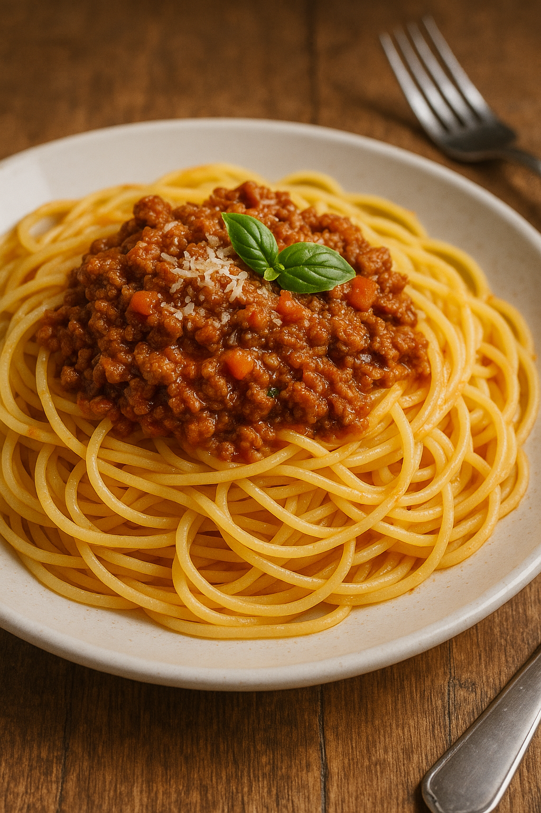

Spaghetti Bolognese
Rezeptliste

Das perfekte Essen für die ganze Familie
Zutaten:
- 400g Spaghetti
- 2 EL Olivenöl
- 1 Zwiebel, fein gehackt
- 2 Knoblauchzehen, fein gehackt
- 500g Rinderhackfleisch
- 800g gehackte Tomaten (aus der Dose)
- 2 EL Tomatenmark
- 1 TL getrockneter Oregano
- 1 TL getrockneter Basilikum
- Salz und Pfeffer nach Geschmack
- Frisch geriebener Parmesan zum Servieren
Zubereitung:
- Die Spaghetti nach Packungsanweisung in reichlich Salzwasser al dente kochen. Abgießen und beiseite stellen.
- In einer großen Pfanne das Olivenöl erhitzen. Die gehackte Zwiebel und den Knoblauch darin glasig dünsten.
- Das Rinderhackfleisch hinzufügen und krümelig braten, bis es braun ist.
- Die gehackten Tomaten, das Tomatenmark, Oregano und Basilikum in die Pfanne geben. Mit Salz und Pfeffer abschmecken.
- Die Sauce bei mittlerer Hitze etwa 15-20 Minuten köcheln lassen, bis sie eingedickt ist.
- Die gekochten Spaghetti unter die Sauce mischen oder die Sauce über die Spaghetti servieren.
- Mit frisch geriebenem Parmesan bestreuen und sofort servieren.